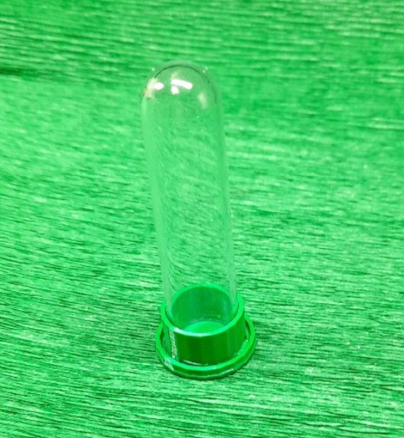

Praktyczne poidełko o pojemności 5 ml zapewniające stały dostęp do wody dla kolonii mrówek. Konstrukcja zapobiega wyciekaniu wody, a mrówki mogą bez problemu pobierać wodę. Idealne do większości hodowli formikarium.
✔ pojemność 5 ml
✔ brak wycieków
✔ łatwe pobieranie wody przez mrówki
✔ wysokość z probówką 7 cm
✔ wielokrotnego użytku